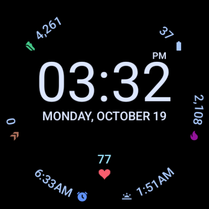
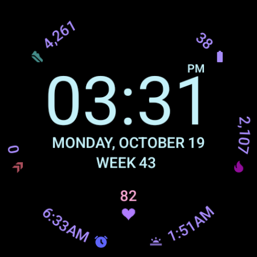
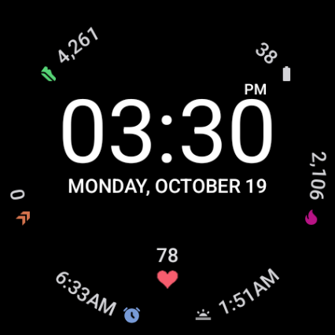
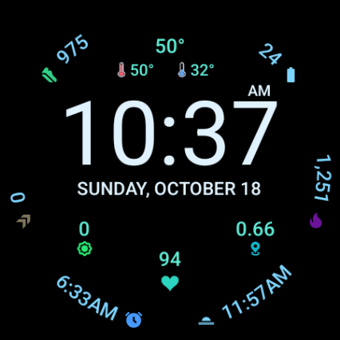
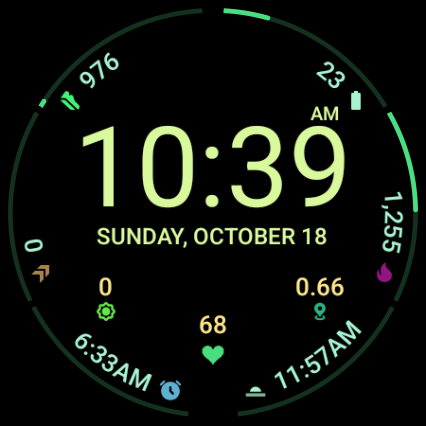
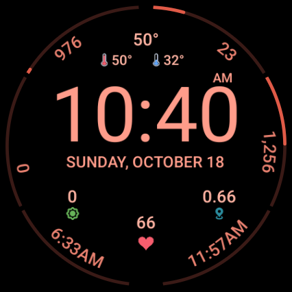
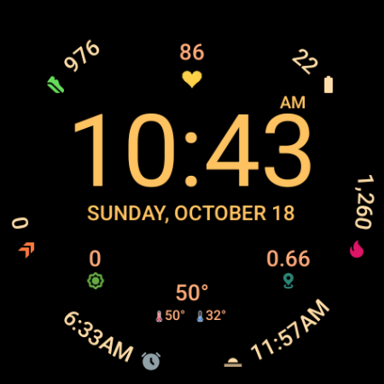

Arcline puts your complications around the edge of the watch in clean curved text, so the time gets the middle. With a heart that beats with yours, weather that looks ahead, and 35 color themes.
Help test itArcline is in testing before it opens to everyone on Google Play. Testers get it first, free, on their own watch. It takes a minute:
Please stay in the test for at least two weeks. Feedback is welcome at daniel@twistedpair.se. Needs a watch with Wear OS 6 or later.
Everything you check a dozen times a day, arranged so it never crowds the time.
Six complications follow the edge of the watch in curved text, with slim meters for things like steps and battery. Two more sit in the middle. The time gets the space it deserves.
The heart beats at your measured heart rate, a soft pulse you can glance at. Prefer it calm? Make it still.
The temperature now, and the high and low for the coming hours, not the day that's already half gone.
The date in your watch's language, and the week number counted the way your region does it: ISO weeks in Europe, Sunday weeks in the US.
When the screen dims, the time turns thin and the complications stay readable, as bright or dim as you like.
Built with Google's Watch Face Format: no app running in the background, nothing collected, nothing sent.
The same face with different settings. Every look below is a choice in the watch face editor.







Long-press the face and tap the pencil to change any of these on your watch.
Six along the rim and two in the middle. Pick any complication your watch offers.
The small icon at the end of each rim complication.
Follow your watch's setting, or choose. In 12-hour mode, AM or PM sits above the minutes.
How bright the complications, heart and weather are when the screen dims.
Put each above or below the time, or turn it off. The two middle complications move closer together when nothing sits between them.
Nine colors for the heart.
Beating at your heart rate, or still.
Slim meters along the rim for values like steps and battery, or just the values.
35 themes, each coloring the time, the rim, the meters and the middle in its own shades.
The week number beside the date, on its own line below it (the date gets bigger), or hidden.
The weekday and month come from your watch in its own language. The week word is translated too, and the date line sizes itself to fit the words.